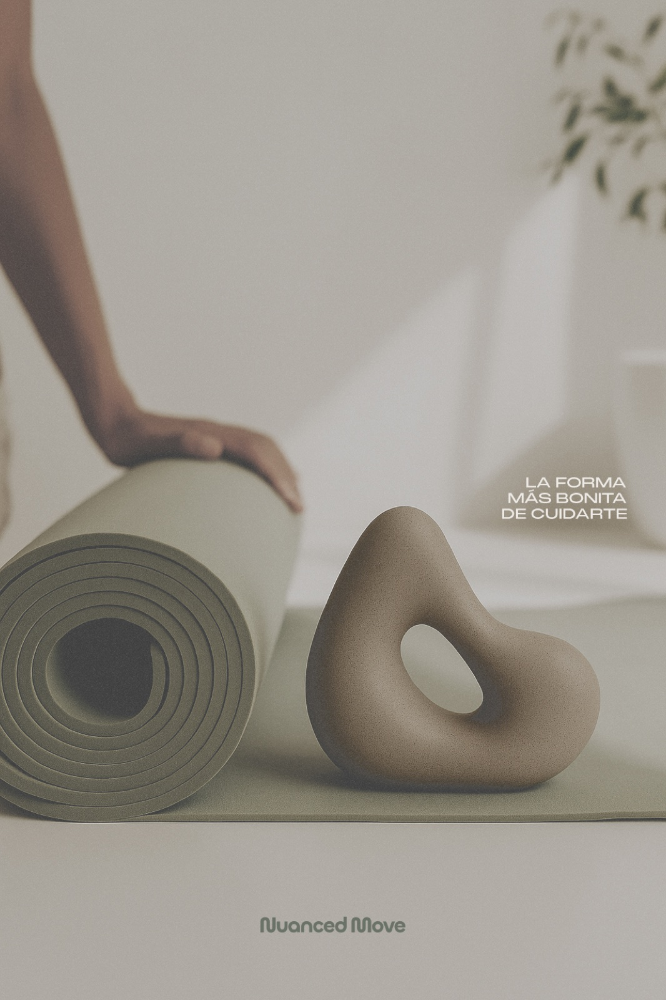
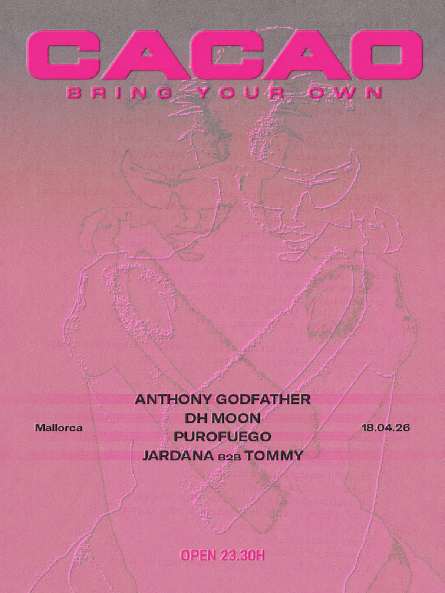
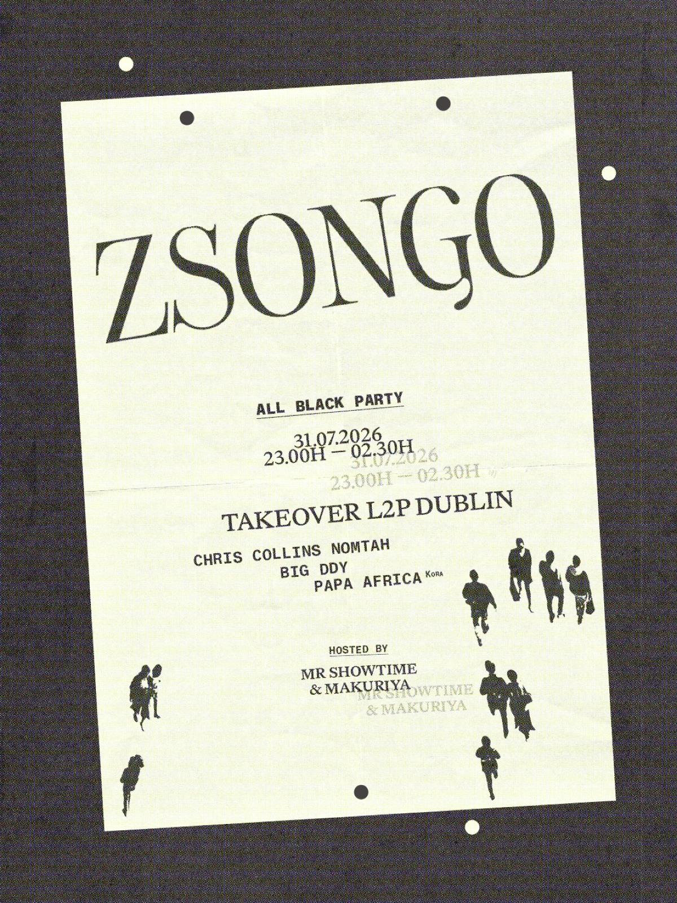

(06) Archivo
Proyectos
-
(001)
Soberana Madrid
2026 / Branding 360, Print.
Branding · Identidad Visual · Diseño de Impresión · Diseño Web · Estrategia de Comunicación
Territorio mercado: España.
Público target: Generación Z, millenials, wellness enthusiasts.Branding integral para una coctelería premium sin alcohol en Madrid: naming, estrategia y sistema de identidad visual.
Reto/
Crear una marca capaz de liderar la coctelería 0.0, una categoría en auge sin un referente en la hostelería premium madrileña.
Solución/
El nombre juega con sober y soberanía, y el isotipo une un corte botánico con el símbolo del conjunto vacío. La dirección de arte toma códigos editoriales, científicos y cosméticos, y la campaña parte de un insight: “Nadie te pregunta por qué bebes. Solo te preguntan por qué no”.


-
(002)
Passage Burberry
2026 / Packaging, Concepción.
Identidad Visual · Diseño de Impresión · Packaging · ConceptualizaciónExtensión conceptual de Burberry al café de especialidad: una colección de seis orígenes con packaging coleccionable.
Reto/
Llevar la marca a una categoría ajena a su ADN sin perder autenticidad.
Solución/
El proyecto parte del legado viajero de Burberry y convierte cada envase en una parada de un itinerario editorial. Tipografía vertical de gran formato, un degradado propio por origen, el Equestrian Knight y el azul Klein dan coherencia a la colección.


-
(003)
Editorial Specimen
2025 / Editorial, Creative Direction.
Editorial · Diseño de Impresión · Dirección Creativa · Experimentación · Team Work
ADG Laus Awards / InBook 2026.Colección editorial que estudia objetos cotidianos como especímenes. Seleccionada en ADG Laus Awards / InBook 2026.
Reto/
Revelar el diseño que hay en lo ordinario y acercar la cultura del diseño a un público amplio.
Solución/
Cada volumen disecciona un único objeto, de su ficha técnica a su reinterpretación artística. Dos papeles separan las capas de contenido y una maqueta sin retícula rígida convierte cada número en un campo de exploración.


-
(004)
Bodega Borne
2026 / Identidad, Packaging.
Identidad Visual · Diseño de Impresión · Packaging · Conceptualización
Territorio mercado: España e internacional. Vino de autor.
Público target: Perfil alto. Curioso. Exigente. Con criterio.Branding y packaging para una bodega ficticia de la D.O. Toro y su colección de tres vinos, Postrero.
Reto/
Diferenciarse en un mercado dominado por códigos taurinos y estéticas oscuras convencionales.
Solución/
La marca se construye sobre el lugar y el tiempo: las cepas prefiloxéricas de 50, 80 y más de 100 años. Una figura inspirada en un reloj de arena, la secuencia bronce, plata y oro y un código cromático basado en datos enológicos reales dejan que el color haga todo el trabajo.


-
(005)
Velzia Group
2026 / Editorial, Print.
Editorial · Diseño de Impresión · Dirección Artística · Redes SocialesDiseño editorial y contenido visual para Velzia Group, referente en reforma e interiorismo premium en Madrid.
Reto/
Trasladar el nivel de acabado de sus obras al plano gráfico, en sus publicaciones y en sus marcas.
Solución/
Un libro de estilos que organiza cinco estilos de interiorismo en una herramienta clara para el cliente, y un sistema de contenido para redes que sitúa el mobiliario real en escenas aspiracionales. La IA generativa, bajo una dirección de arte definida, reduce tiempos y costes sin perder calidad.


-
(006)
Otras piezas gráficas
Print Explorations · Types Explorations · Grid Explorations · Graphic ExplorationsSelección de piezas sueltas: carteles, ilustración y exploraciones de impresión, tipografía y retícula.







(06) Archive
Projects
-
(001)
Soberana Madrid
2026 / Branding 360, print.
Branding · Visual identity · Print design · Web design · Communication strategy
Market: Spain.
Target audience: Generation Z, millennials and wellness-conscious audiences.Full branding for a premium non-alcoholic cocktail bar in Madrid: naming, strategy and visual identity system.
Challenge/
Build a brand able to lead 0.0 mixology, a growing category with no clear leader in Madrid’s premium hospitality scene.
Solution/
The name plays on sober and sovereignty, and the symbol merges a botanical cross-section with the empty-set sign. The art direction borrows from editorial, scientific and cosmetic codes, and the campaign is built on one insight: “No one asks why you drink. They only ask why you don’t.”
-
(002)
Passage Burberry
2026 / Packaging, concept development.
Visual identity · Print design · Packaging · Concept developmentA conceptual extension of Burberry into specialty coffee: a six-origin collection with collectible packaging.
Challenge/
Take the brand into a category outside its DNA without losing authenticity.
Solution/
The project draws on Burberry’s heritage of travel and turns each package into a stop on an editorial journey. Large-scale vertical typography, a gradient for each origin, the Equestrian Knight and Klein Blue hold the collection together.
-
(003)
Editorial Specimen
2025 / Editorial, creative direction.
Editorial design · Print design · Creative direction · Creative exploration · Team work
Selected for ADG Laus Awards / InBook 2026.An editorial series that studies everyday objects as specimens. Selected for ADG Laus Awards / InBook 2026.
Challenge/
Reveal the design hidden in the ordinary and bring design culture to a wider audience.
Solution/
Each volume dissects a single object, from its technical sheet to its artistic reinterpretation. Two paper stocks separate the layers of content, and a layout free from a rigid grid turns each issue into a space for exploration.
-
(004)
Bodega Borne
2026 / Visual identity, packaging.
Visual identity · Print design · Packaging · Concept development
Market: Spain. International.
Category: premium wine.
Target audience: high-end consumers, wine collectors; curious, discerning and quality-conscious audiences.Branding and packaging for a fictional winery in the Toro D.O. and its three-wine collection, Postrero.
Challenge/
Stand out in a market dominated by bullfighting imagery and conventional dark aesthetics.
Solution/
The brand is built on place and time: pre-phylloxera vines aged 50, 80 and over 100 years. An hourglass-inspired form, a bronze, silver and gold sequence and a colour code based on real oenological data let colour do all the work.
-
(005)
Velzia Group
2026 / Editorial, print.
Editorial design · Print design · Art direction · Communication & social mediaEditorial design and visual content for Velzia Group, a leading premium renovation and interior design firm in Madrid.
Challenge/
Translate the finish of its projects into graphic form, across its publications and brands.
Solution/
A style book that organises five interior styles into a clear tool for clients, and a social content system that places real furniture in aspirational settings. Generative AI, guided by a defined art direction, cuts time and cost without losing quality.
-
(006)
(Other) Graphic Pieces
Print explorations · Type explorations · Grid explorations · Graphic explorationsA selection of standalone pieces: posters, illustration, and print, type and grid explorations.